第 1 页 · 1 大模型与AIGC
1 大模型与AIGC

模块5：浅尝生成式人工智能


第 2 页 · 从ChatGPT到DeepSeek，大模型如何改变了我们的世界？
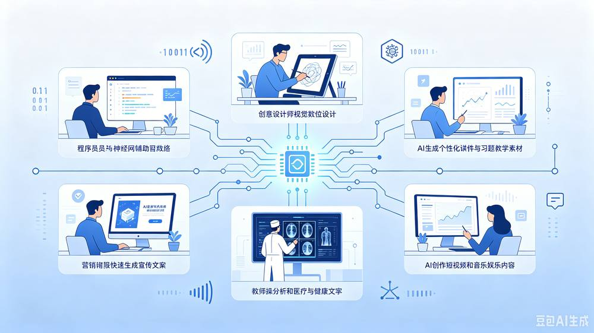
从ChatGPT到DeepSeek，大模型如何改变了我们的世界？
第 3 页 · 一、什么是大模型？
一、什么是大模型？
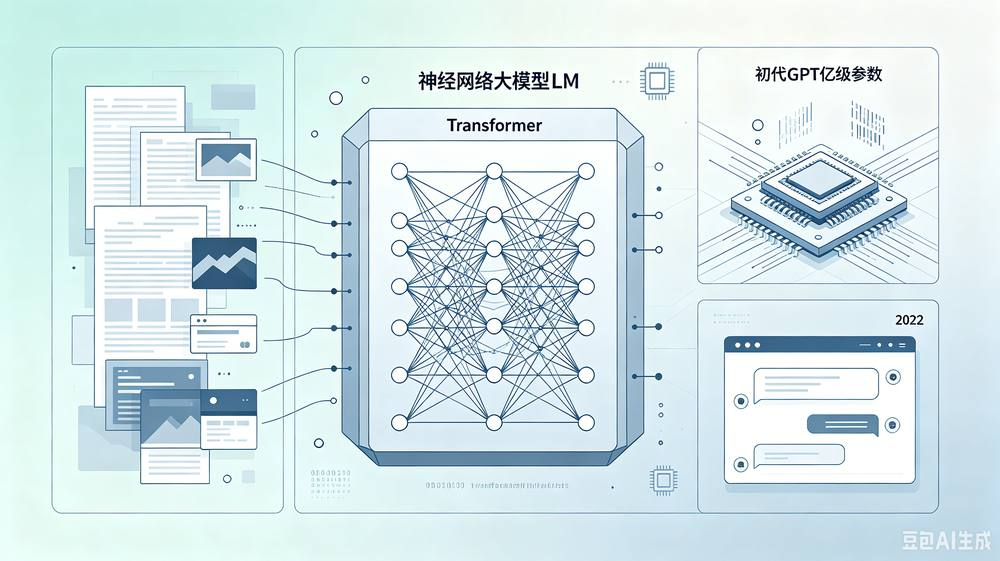
大模型（LM）：巨大参数量的深度学习模型
基于深度神经网络，学习海量文本、图像等数据
以Transformer架构为核心
2022年ChatGPT
第 4 页 · 二、大模型的发展历程
二、大模型的发展历程
第 5 页 · 1.萌芽期
1.萌芽期

二、大模型的发展历程
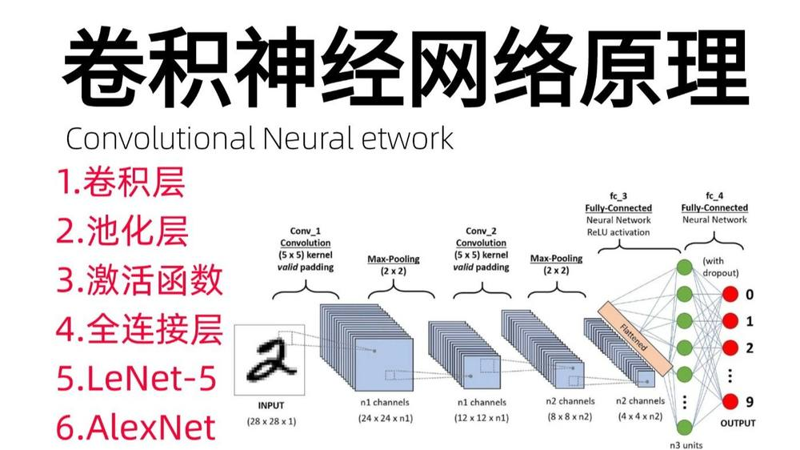
第 6 页 · 2.探索期
2.探索期
二、大模型的发展历程
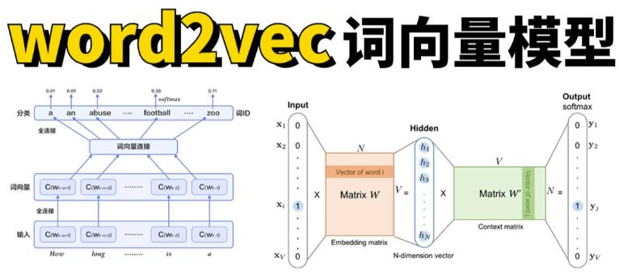
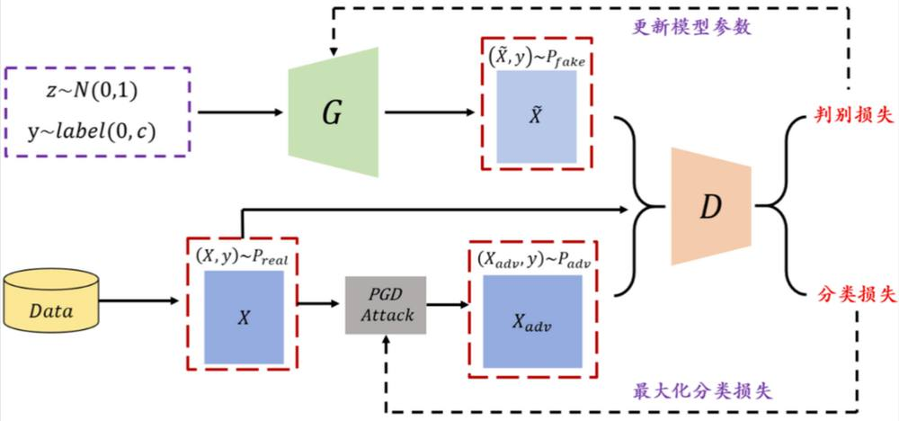
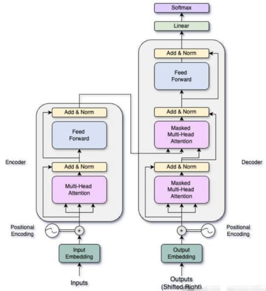
第 7 页 · 3.腾飞期
3.腾飞期
二、大模型的发展历程
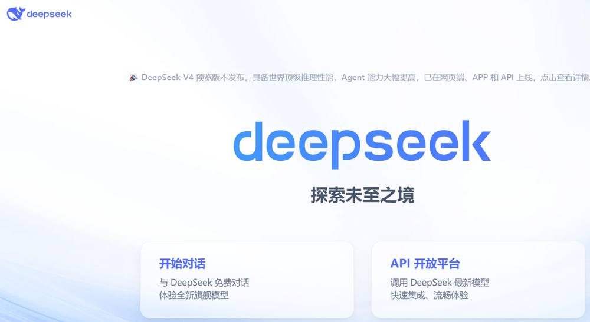
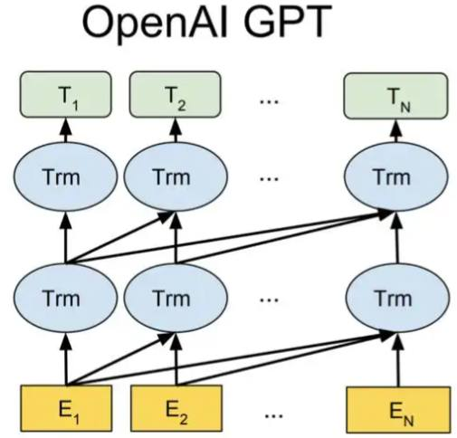
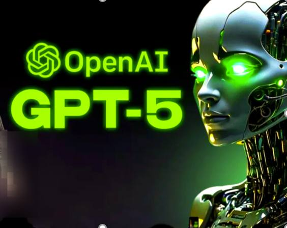
第 8 页 · 三、大模型的核心优点
三、大模型的核心优点
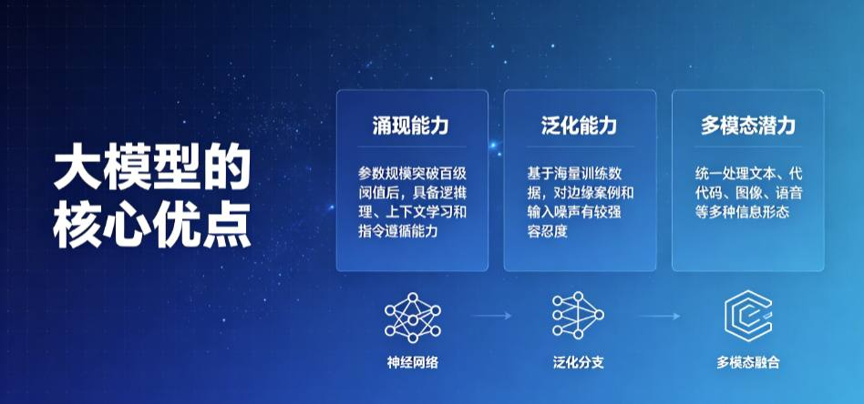
第 9 页 · 四、 AIGC的特点与应用
四、 AIGC的特点与应用
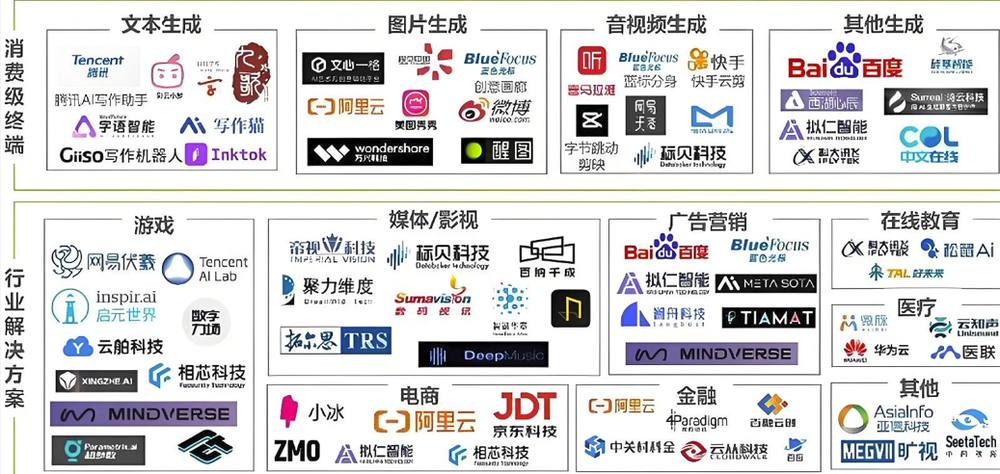
AIGC：
利用AI大模型
自动生成
各种模态内容
特点：
自动化
有创意
表现力强
迭代发展
第 10 页 · 五、 大模型与AIGC的关系
五、 大模型与AIGC的关系
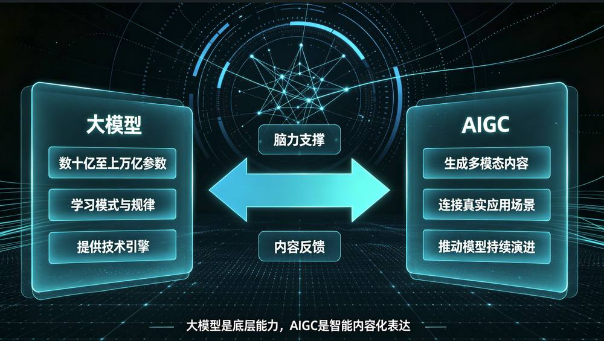
第 11 页 · AIGC带来的变革
AIGC带来的变革

以今昔对比的方式感受AIGC带来的变化，填写下表。
| 场景 | 以往方式 | 现在方式 | 未来方式 |
| 广告制作 | |||
| 文案创作 | |||
| 视频创作 | |||
| 音乐创作 | |||
| 零件建模 | |||
| 学习辅导 |
第 12 页 · 学生分享及教师点评
学生分享及教师点评

| 分享要点 | 分值 | 计分 | 教师点评 |
| 1、你是怎么收集任务数据的？ | 10 | 主动使用AI工具 | |
| 2、你与同学进行了哪些充分的讨论？ | 10 | 集思广益、团结协助 | |
| 3、请简述AIGC给上述6个场景带来的变化 | 30 | 积极思考、善于思考总结 | |
| 4、除此之外，你认为AI在哪个方面会有巨大影响？ | 20 | 创新思维、与众不同 | |
| 5、AIGC对你学业的影响有哪些？请简述1-3条 | 20 | 顶天立地，从身边做起 | |
| 6、其它（含逻辑、表情、主动、清晰、流畅、自信等） | 10 | 能说、亲和、善用、精技 |
第 13 页 · 子任务3：语音提示处理
子任务3：语音提示处理

主动拥抱AIGC
让AIGC赋能你我